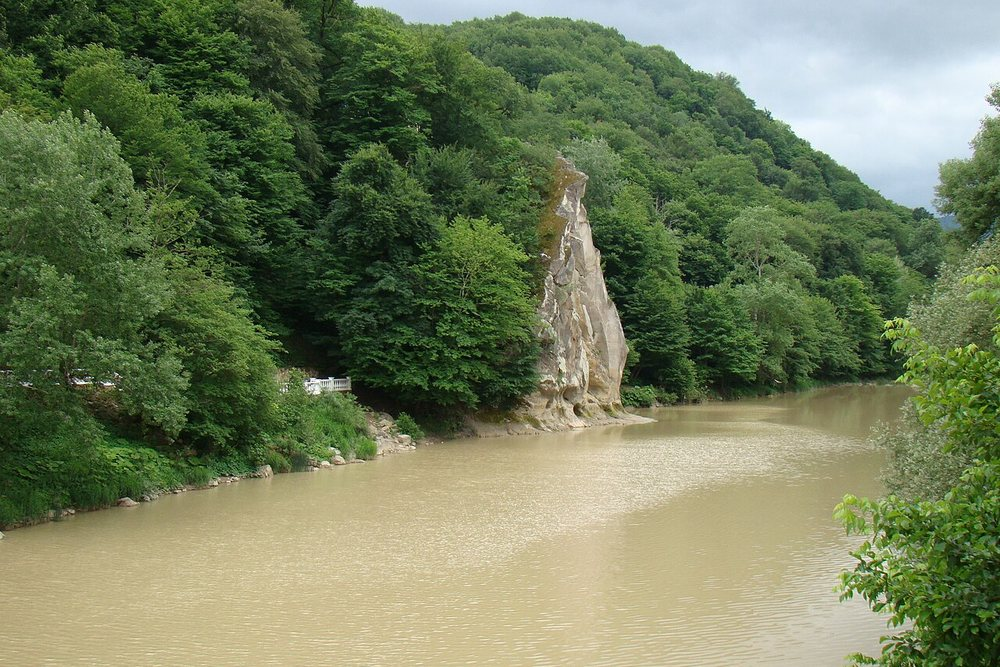

Маршруты · 2024–2026
Куда я езжу
Шесть маршрутов по Краснодару и краю, которые проехал за последние два сезона. Время указано с остановками и без соревновательного темпа. Набор высоты считал по трекеру, поэтому цифры примерные.
| № | Маршрут | Дистанция | Набор высоты | Время | Сложность | Покрытие |
|---|---|---|---|---|---|---|
| 1 | Кубанское кольцо | 32 км | 240 м | 2 ч 10 мин | низкая | асфальт, набережная |
| 2 | Петля у водохранилища | 48 км | 310 м | 3 ч 20 мин | средняя | асфальт, гравий |
| 3 | Дачи под Афипским | 27 км | 180 м | 1 ч 50 мин | низкая | асфальт |
| 4 | Гряда за Горячим Ключом | 64 км | 620 м | 4 ч 40 мин | высокая | грунт, камни |
| 5 | Полевой круг за Убинской | 41 км | 150 м | 2 ч 30 мин | средняя | гравий, поле |
| 6 | Ночной Краснодар | 22 км | 90 м | 1 ч 15 мин | низкая | асфальт |
Сложность: низкая — можно с новичком; средняя — нужен опыт и запас воды; высокая — лучше ехать в компании и брать ремнабор.

Планы на сезон
Отдельная таблица, чтобы не забыть, что хотел попробовать в этом году.
| Месяц | Маршрут | Цель |
|---|---|---|
| Апрель | Кубанское кольцо | открыть сезон без спешки |
| Май | Петля у водохранилища | проехать без длинных остановок |
| Июнь | Гряда за Горячим Ключом | первый раз больше 60 км |
| Август | Ночной Краснодар | проехать по пустым улицам |
Если решите повторить какой-то маршрут, сначала посмотрите погоду и состояние грунта. После сильного дождя «Гряда за Горячим Ключом» превращается в кашу — я один раз сунулся и полтора часа толкал велосипед. Лучше неделю подождать.